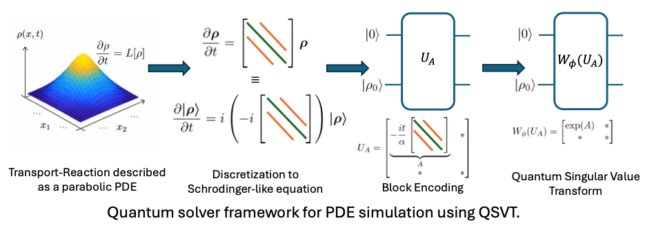
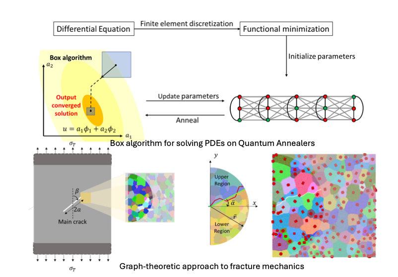
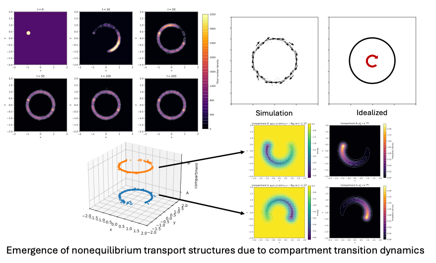
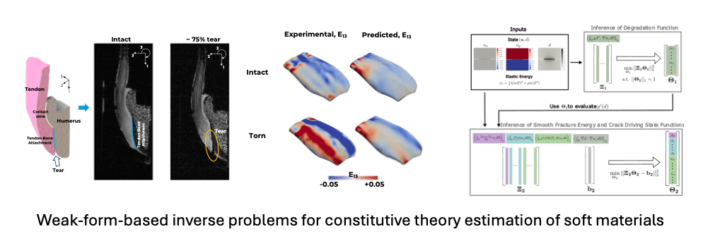

The following problems provide a representative overview of the research directions currently pursued within the QuAC group. We are broadly interested in mathematical and computational challenges arising across applied mechanics, continuum physics, and scientific computing.
Quantum Algorithms for PDE-Based Transport and Continuum Simulation
Many problems in continuum mechanics, transport, and multiscale physics are governed by partial differential equations whose discretizations give rise to large sparse operators with rich algebraic structure. Our work investigates how this structure can be leveraged in quantum algorithms for scientific computing, with particular emphasis on block-encoding methods and Quantum Singular Value Transformation (QSVT). We develop quantum solvers based on weak formulations of PDEs and design specialized quantum operators for simulation and system inference in continuum systems. A central theme of this work is understanding how sparsity, locality, variational structure, and conservation laws influence the construction of efficient quantum algorithms for PDE-based simulation. We are particularly interested in:

Quantum Annealing for Combinatorial Graph Formulations in Mechanics
As conventional computing approaches the limits of transistor scaling and energy efficiency, scientific computing is increasingly exploring specialized post-Moore hardware. Within this landscape, quantum annealing provides a particularly natural platform for mechanics problems that can be expressed as structured combinatorial optimization tasks. Our work investigates how models from applied mechanics and computational physics can be reformulated so that their energetic, geometric, and topological structure is preserved in a discrete optimization setting. This perspective is especially relevant for multiphase media, including porous solids, polycrystalline materials, mixed-phase alloys, and fracture systems, where the physics is often governed by competition between surface and bulk energies. While such systems are commonly modeled using phase-field methods, the number of fields and admissible configurations can grow rapidly with the number of phases. Discrete formulations offer an alternative route, but require careful construction of surface measures, compatibility constraints, and physically meaningful interaction energies. We borrow ideas from graph theory and differential geometry to build graph-based representations of these mechanics problems and map them to combinatorial energy minimization forms, including QUBO and Ising-type formulations suitable for quantum annealing hardware such as the D-Wave quantum annealer. We are interested in understanding which physical structures and discrete formulations make mechanics problems naturally suited to annealing-based computation. The initial development of this research direction was carried out during PI Siddhartha Srivastava’s doctoral work under the supervision of Prof. Veera Sundararaghavan at the University of Michigan. We have since applied these ideas to problems in fracture mechanics, mesh generation, PDE discretizations, bandgap optimization in spinodal systems, and scientific machine learning. Some of the open problems in this area that are of current interest to the group:

Mean-Field Transport and Coarse-Grained Stochastic Dynamics
Many transport processes in biological, physical, and collective systems emerge from stochastic interactions between large populations of agents. Our work develops continuum-scale descriptions for such systems by coarse graining discrete stochastic dynamics into mean-field transport theories. Starting from interacting particle systems with collisions, compartment switching, and history-dependent transition mechanisms, we derive continuum descriptions in the form of Fokker–Planck equations, age-structured transport systems, delay differential equations, and advection–diffusion–reaction PDEs with memory effects. A central theme of this work is understanding how microscopic interaction rules and stochastic transition laws generate emergent macroscopic transport behavior. We investigate systems in which agents evolve across multiple internal compartments, each governed by its own migration law, interaction kernel, or effective energy landscape. Stochastic switching between compartments can produce nonequilibrium continuum behavior, probability currents, and persistent transport even when the observed density fields appear stationary. These models naturally connect ideas from kinetic theory, optimal transport, gradient flows, branching processes, and nonequilibrium statistical physics. This work is carried out in collaboration with Prof. Krishna Garikipati(University of Southern California), Prof. Xun Huan (University of Michigan), and Dr. Reese Jones and Dr. Cosmin Safta at Sandia National Laboratories. We are particularly interested in:

Variational Inference of Physical Mechanisms in Continuum Systems
Perhaps, one of the most touted challenges in computational physics in the past decade has been – ‘Infer the governing physics of the system from experimental data’, leading to the development of methods like manifold learning, SINDy, VSI, and many more. Most physical systems admit to a partial differential equations (PDE) model. The discovery of physical mechanisms, thus, involves finding the simplest PDE that explains the experimental data. We develop techniques at the intersection of finite element methods and data-driven optimization methods. These techniques, being based on the weak form of PDE, allow for minimal regularity constraint on the data as well as give a natural way of prescribing the boundary conditions necessary for emulating the experimental conditions. We apply these techniques to infer constitutive theories for soft matter and continuum-scale transport mechanisms in biological and physical systems. This research builds on the Variational System Identification (VSI) framework, originally developed by Prof. Krishna Garikipati and collaborators, and continues through collaborations with Prof. Ellen Arruda at the University of Michigan and Prof. Krishna Garikipati at the University of Southern California. These efforts have identified some critical open challenges in the field:
